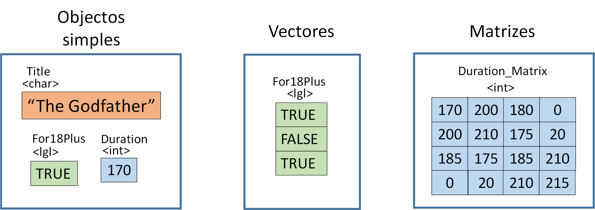
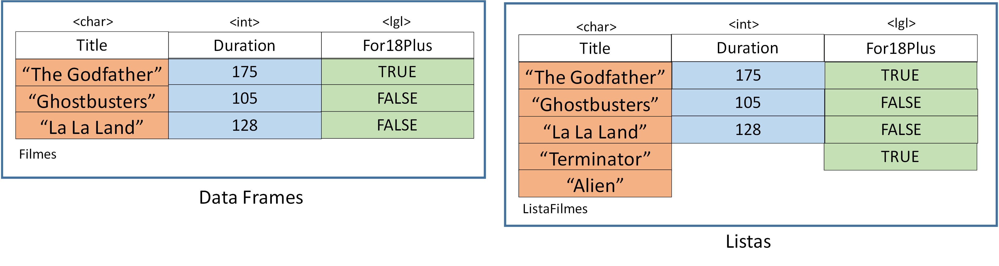
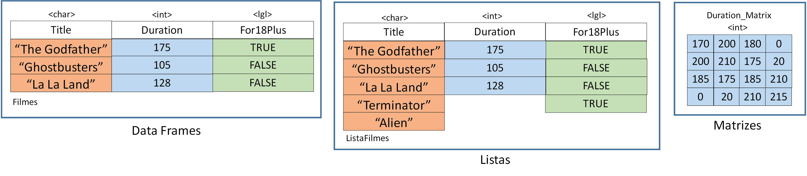

"A World-Wide organization to promote gender diversity in the R community"

4000 R-Ladies e 30 cidades iniciaram um grupo R-Ladies
4000 R-Ladies e 30 cidades iniciaram um grupo R-Ladies
No final da sessão deverão ser capazes de:
Programar não é uma atividade a solo. Devemos fazer perguntas e cooperar. Todos passamos pelas mesmas dificuldades.
2 + 2
## [1] 4
2 * 6 + 9 * (10 ^ (-3) + 6 * 2)
## [1] 120.009
Experimentar um cálculo à escolha.
# Filmes
# ID Title Genre Duration Rating For18Plus
# <int> <chr> <chr> <int> <dbl> <lgl>
# 1 1 The Godfather Drama 175 9.2 TRUE
# 2 2 The Terminator Action 107 8.0 FALSE
# 3 3 La La Land Musical 128 8.4 FALSE
# 4 4 Ghostbusters Comedy 105 7.8 FALSE
# 5 5 Alien <NA> NA 6.1 TRUE
# 6 6 <NA> Sci-Fi 107 6.7 FALSE
A tabela possui diferentes tipos de dados:
typeof(Duration)
## [1] "integer"
class(Duration)
## [1] "integer"
str(Duration)
## int [1:6] 175 107 128 105 NA 107
Armazenar valores em variáveis:
Title <- "The Godfather"
Para ver o conteúdo de uma variável, devemos escrever o nome dela:
Title
## [1] "The Godfather"
Criar a variável Genre com o valor "Drama"


Usar c() para concatenar valores:
Title <- c("The Godfather", "The Terminator", "La La Land", "Ghostbusters", "Alien")
Title
## [1] "The Godfather" "The Terminator" "La La Land" "Ghostbusters"
## [5] "Alien"
Usar sequências:
ID <- 1:10
ID
## [1] 1 2 3 4 5 6 7 8 9 10
Usar seq() para uma sequência com intervalos de 5:
Duration <- seq(170, 190, by = 5)
Duration
## [1] 170 175 180 185 190
Criar uma sequência com repetição:
Rating <- rep(c(1, 5, 3), times = 3)
Rating
## [1] 1 5 3 1 5 3 1 5 3
Repetir cada valor numa sequência:
Rating <- rep(c(1, 5, 3), each = 3)
Rating
## [1] 1 1 1 5 5 5 3 3 3
Aceder a elementos de um vector:
Genre <- c("Drama", "Action", "Musical", "Comedy", "Sci-Fi")
Genre[1]
## [1] "Drama"
Nota: Os índices em R começam em [1], ao contrário de outras linguagens (Python, Java, C) que começam em [0].
Criar vector For18Plus com valores de TRUE or FALSE, na ordem da tabela.
Criar vector Class com a sequência de valores "Bom", "Mau", "Mehh", repetida 2 vezes.
Aceder à classificação (variável Class) do 3º filme.
Estruturas multidimensionais que assumem apenas 1 tipo de dados
Criar matriz:
m <- matrix(1:36, nrow = 6, ncol = 6)
m
## [,1] [,2] [,3] [,4] [,5] [,6]
## [1,] 1 7 13 19 25 31
## [2,] 2 8 14 20 26 32
## [3,] 3 9 15 21 27 33
## [4,] 4 10 16 22 28 34
## [5,] 5 11 17 23 29 35
## [6,] 6 12 18 24 30 36
Aceder a elementos da matriz:
m[2, ] # Aceder a uma linha
## [1] 2 8 14 20 26 32
m[ ,1] # Aceder a uma coluna
## [1] 1 2 3 4 5 6
m[2,3] # Aceder a um elemento
## [1] 14
Concatenar matrizes:
cbind(m,c(101,102,103,104,105,106)) # adicionar mais uma coluna
## [,1] [,2] [,3] [,4] [,5] [,6] [,7]
## [1,] 1 7 13 19 25 31 101
## [2,] 2 8 14 20 26 32 102
## [3,] 3 9 15 21 27 33 103
## [4,] 4 10 16 22 28 34 104
## [5,] 5 11 17 23 29 35 105
## [6,] 6 12 18 24 30 36 106
Concatenar matrizes:
rbind(m,c(101,102,103,104,105,106)) # adicionar mais uma linha
## [,1] [,2] [,3] [,4] [,5] [,6]
## [1,] 1 7 13 19 25 31
## [2,] 2 8 14 20 26 32
## [3,] 3 9 15 21 27 33
## [4,] 4 10 16 22 28 34
## [5,] 5 11 17 23 29 35
## [6,] 6 12 18 24 30 36
## [7,] 101 102 103 104 105 106
Estruturas multidimensionais usadas para armazenar tabelas:
library(tidyverse)
df <- data_frame(ID = 1:6, Duration = c(175,107,128,105,NA,107),
Title = c("The Godfather", "The Terminator", "La La Land", "Ghostbusters", "Alien", NA))
df
## # A tibble: 6 × 3
## ID Duration Title
## <int> <dbl> <chr>
## 1 1 175 The Godfather
## 2 2 107 The Terminator
## 3 3 128 La La Land
## 4 4 105 Ghostbusters
## 5 5 NA Alien
## 6 6 107 <NA>
Uma dataframe pode ser interpretada como:

Completar o código com os dados que faltam. Armazenar o resultado numa dataframe com o nome Filmes.
library(tidyverse)
data_frame(ID = 1:6,
Title = c("The Godfather", "The Terminator", "La La Land", "Ghostbusters", "Alien", NA))
Aceder a elementos de uma dataframe
# Aceder por índice:
Filmes[2,2]
## # A tibble: 1 × 1
## Title
## <chr>
## 1 The Terminator
# Aceder por nome da variável/coluna:
Filmes$Title
## [1] "The Godfather" "The Terminator" "La La Land" "Ghostbusters"
## [5] "Alien" NA
Descobrir mais sobre uma dataframe
nrow(Filmes) # Número de observações/linhas
## [1] 6
ncol(Filmes) # Número de variáveis/colunas
## [1] 6
dim(Filmes) # Número de linhas e colunas
## [1] 6 6
Visualizar a dataframe
head(Filmes) # Ver as primeiras 6 observações
## # A tibble: 6 × 6
## ID Title Genre Duration Rating For18Plus
## <int> <chr> <chr> <int> <dbl> <lgl>
## 1 1 The Godfather Drama 175 9.2 TRUE
## 2 2 The Terminator Action 107 8.0 FALSE
## 3 3 La La Land Musical 128 8.4 FALSE
## 4 4 Ghostbusters Comedy 105 7.8 FALSE
## 5 5 Alien <NA> NA 6.1 TRUE
## 6 6 <NA> Sci-Fi 107 6.7 FALSE
Visualizar a dataframe
head(Filmes, 3) # Ver apenas 3 observações
## # A tibble: 3 × 6
## ID Title Genre Duration Rating For18Plus
## <int> <chr> <chr> <int> <dbl> <lgl>
## 1 1 The Godfather Drama 175 9.2 TRUE
## 2 2 The Terminator Action 107 8.0 FALSE
## 3 3 La La Land Musical 128 8.4 FALSE
View(Filmes) # Ver a dataframe completa
Visualizar a data frame Filmes com o comando 'head'
Criar uma nova data frame Filmes_Alt resultante da concatenaçao da data frame Filmes com o vector Class (ver exercício 4).
NA significa "Not Available", "Not Applicable" ou "Not Announced"
is.na(Filmes$Title)
## [1] FALSE FALSE FALSE FALSE FALSE TRUE
complete.cases(Filmes)
## [1] TRUE TRUE TRUE TRUE FALSE FALSE
Eliminar NA's
Filmes$Title[!is.na(Filmes$Title)]
## [1] "The Godfather" "The Terminator" "La La Land" "Ghostbusters"
## [5] "Alien"
Filmes[complete.cases(Filmes),]
## # A tibble: 4 × 6
## ID Title Genre Duration Rating For18Plus
## <int> <chr> <chr> <int> <dbl> <lgl>
## 1 1 The Godfather Drama 175 9.2 TRUE
## 2 2 The Terminator Action 107 8.0 FALSE
## 3 3 La La Land Musical 128 8.4 FALSE
## 4 4 Ghostbusters Comedy 105 7.8 FALSE
As funções englobam uma tarefa numa única linha de código
Porquê utilizar funções:
myFunction <- function(input_argument){
cube <- input_argument*input_argument*input_argument
return(cube)
}
print(myFunction(2))
## [1] 8
Exemplo: Escolher um filme
FilmeOk <- function(Nome_Filme){
Filme <- Filmes[Filmes$Title == Nome_Filme,]
if(Filme$Rating < 6.3) {
print("Má escolha")
} else {
print("Boa escolha")
}
}
FilmeOk("Alien")
## [1] "Má escolha"
library(tidyverse)
df <- read_csv('C:/Users/GICpr/Desktop/exemplo.csv')
Exercício 7
# Ler o ficheiro 'exemplo.csv' disponível na pasta meetup3
if("swirl" %in% installed.packages() == FALSE){install.packages("swirl")}
library(swirl)
install_from_swirl("R_Programming_Alt")
swirl()
# continue writing on the console
www.meetup.com/R-Ladies-Lisboa
www.twitter.com/RLadiesLx/ | www.facebook.com/groups/RLadiesLisboa